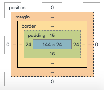

A good way to look at what HTML CSS and the DOM is to use the house analogy. HTML can be seen as the structure of the website and is like the different parts of a house. For example a webpage in HTML is split up into different sections, just as a house is split into different rooms, HTML organises these sections. Examples of the different sections of HTML include header, body and footer. You can add more sections or elements within these sections for example if you wanted to put a picture on a wall of your house, you would first have to define what "room" (or section of the webpage) you are in and then use the approiate element to hang the picture.
You can think of CSS as what styles your house, e.g. the paint, carpet and over-all look. With CSS you can define very specific elements such as you only want tiles in the bathroom, or broarder elements like you want all the walls of the house to be red. Similarly with a website CSS allows you to change font colours, background colours and style elements how you like them.
An easy way to think of The DOM (Document Object Model) is to think of it as an interpreter, interpreting the written HTML language and the language that the web browser uses to show you the webpage. Also with The Dom it allows you to change elements of your webpage without destructively changing them, for example you could see what your house would look like with black carpet and it be no trouble to revert to the orignal carpet.
Boxifying design means to take a design and break it up into boxes. By breaking the design up into boxes it helps you work out how you are going to layout the page, starting with the bigger boxes and working down to smaller boxes. The box model means to think of your design/layout as individual boxes.
The box model is splitting each element up into further boxes. The first box being the content itself, the next layer is the padding, followed by the border and finishing up with the margin (as seen below). By adjusting the values of each of these boxes,
it can help you format and layout your page.
